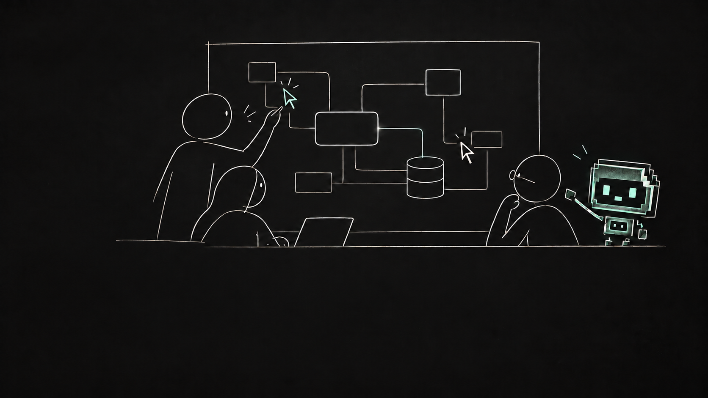

The recording couldn’t load.
YOUR ARCHITECTURE. ON YOUR DESKTOP.
It starts with
“what happens next?”
An order is placed. A service wakes up. Somewhere, a decision needs making. Draw it out in Draft Canvas Desktop—with diagrams beside your code, your own agent, and your team in the same picture.
Download desktop ↓ Or try it in your browser ↗EXPLAIN THE SYSTEM THAT REALLY EXISTS
Don’t just show it.
Walk us through it.
Follow a request through the services. Bring the relevant notes and code into view as each step happens. Give the room a shared understanding of how it works.
The real editor. Take a moment to follow the flow.YOUR OWN AGENT · DESKTOP
Ask what breaks.
Decide what changes.
Connect your own coding agent to the desktop app. Reason about the architecture together with Nodi. Explore risks, compare the proposed change, and accept only what belongs in your design.
The agent proposes. You stay the author.The big picture.
The detail within.
Open a service to explore its components, then return to the overview. The depth stack on the left keeps your place: the overview above, the room you’re exploring below. C4 keeps those levels connected.
Go deeper without losing the thread.FROM YOUR REPOSITORY · DESKTOP
A picture with
something behind it.
Open your project folder on desktop. Keep source references and assumptions beside the architecture, and ask your agent to refresh the diagram when the code changes, with evidence you can inspect.
Know what was observed. Know what was inferred.Bring everyone
into the picture.
Draw together, see each other’s pointers, and follow the owner’s presentation. Live collaboration puts the conversation on the same canvas, without accounts.
One architecture. More than one perspective.Keep the questions.
They belong here too.
Mark a tentative dependency. Attach a question to the service it concerns. Review open points across rooms, so unfinished thinking stays with the architecture.
The next conversation starts with context.A SKETCH BECOMES A SHARED UNDERSTANDING.
What happens next?
That’s your line.
Give your architecture a home beside your code. Save editable diagrams in project folders, work offline, and bring your own coding agent into the picture. Start with a shape, a ready-made pattern, or Mermaid.
Get Draft Canvas Desktop ↓ Or try it in your browser ↗No account. Stored locally.